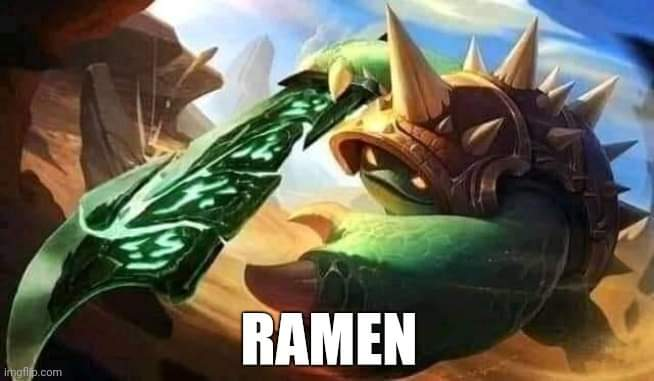
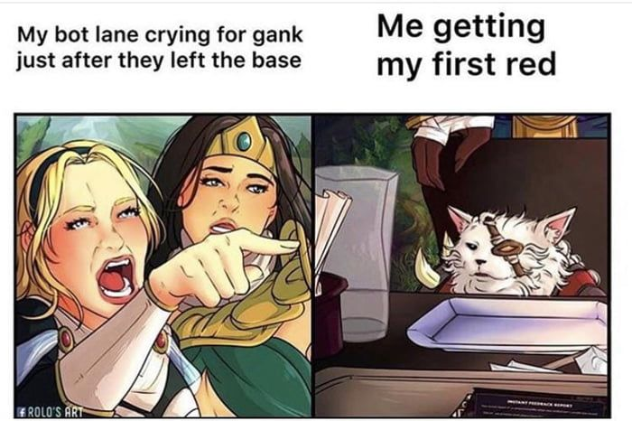
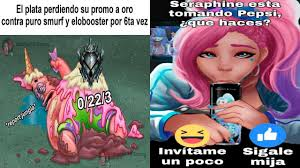

JOGO UM JOGO MERDA DEVO ME PREOCUPAR
O anime conta a história do estudante Yuuji Itadori, um garoto que se destaca no uso de seus dons físicos, ele é bem atlético, mas não tem interesse em clubes esportivos. Ao invés disso, passa seus dias na sala do Clube de Pesquisa Oculta ou no hospital, onde visita seu avô. No entanto, esse estilo de vida vagaroso e tranquilo logo se transforma em algo muito estranho! E sinistro!Juntos, Yuuji e Megumi tentam se defender das maldições e salvar os colegas, mas são encurralados. Então Yuuji decide ingerir o objeto amaldiçoado para ganhar seu poder e conseguir derrotar as maldições. Com isso, Yuuji se torna aluno de Satoru Gojou, o mais poderoso feiticeiro de jujutsu, e descobre esse novo mundo do qual fará parte. E vamos acompanhando isso, a nova vida, a nova escola, os novos amigos, os novos poderes... E as maldições! E as batalhas!!! Sinceramente, entendo algumas das críticas que o anime está recebendo, entendo que nada agrada todo mundo, mas para mim, foi incrível! Tem quem ache que o anime seja como outros animes shounen, tem várias comparações rolando, mas gente, todo gênero tem suas "fórmulas" e seus clichês. Jujutsu Kaisen é interessante e tem uma boa dinâmica. Muitos protagonistas de shounen são irritantes e/ou barulhentos, mas aqui o personagem é extremamente amável e simpático. E temos cenas de ação incríveis! Mesmo que possa ser rotulado como "apenas mais um anime shounen", tudo que um shounen deveria ter e ser, ele é e faz muito bem. Não li o mangá e confesso que não sabia NADA da história, simplesmente comecei a ver o anime porque parecia ser um shounen bacana. Jujutsu Kaisen me pegou de surpresa! É bom demais!!! A animação, a trilha sonora, os personagens, a história, as lutas... tudo é sensacional.

MAPPA é muito foda mesmo! A arte é super linda. Impactante, fluída, com cenários detalhados, personagens bem animados e ângulos de câmera que dão aquele HYPE durantes as lutas. O uso de CGI desagrada algumas pessoas, mas particularmente não me incomoda. Não tenho nenhuma reclamação sobre a animação, apenas elogios.

Jogo lol devo me preocupar ksksksksskskskksksksksk
jogo lixo só tem trol minhas lagrimas caem de pensar em jogar esse jogo :[
